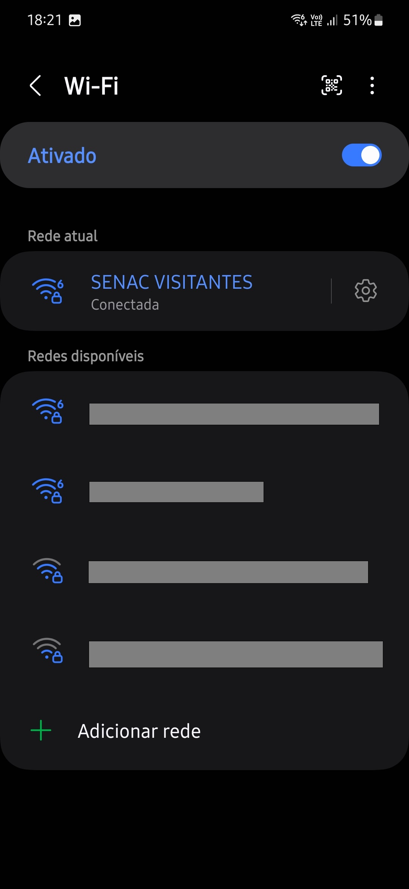

Utilizando o wifi da escola
Wi-Fi é uma tecnologia de comunicação sem fio que permite a conexão de dispositivos à internet e entre si. Utiliza ondas de rádio para transmitir dados, proporcionando mobilidade e conveniência em locais como casas, escritórios e espaços públicos, sem a necessidade de cabos físicos. Essa tecnologia revolucionou a forma como nos comunicamos, permitindo que várias pessoas acessem a internet simultaneamente. Além disso, Wi-Fi é essencial para dispositivos móveis como smartphones, tablets e laptops, facilitando o acesso a informações e serviços online de qualquer lugar dentro do alcance do sinal. A segurança da rede Wi-Fi também é um aspecto importante, garantindo a proteção dos dados transmitidos.
Passo a passo para utilizar o wifi
Ativar Wi-Fi
Deslize a partir do topo da tela para baixo para abrir o painel de configurações rápidas.
Toque no ícone de Wi-Fi e mantenha pressionado.

No painel de Wi-Fi, toque na rede “SENAC VISITANTES”.
Digite a senha “trijuntos” (sem as aspas) e toque em “Conectar”.
Se digitou a senha estiver corretamente, seu celular se conectará à rede.

Uma vez conectado, o ícone de Wi-Fi mudará para mostrar que você está conectado.
Abra um navegador ou outra aplicação que use a internet para verificar se a conexão foi bem-sucedida.